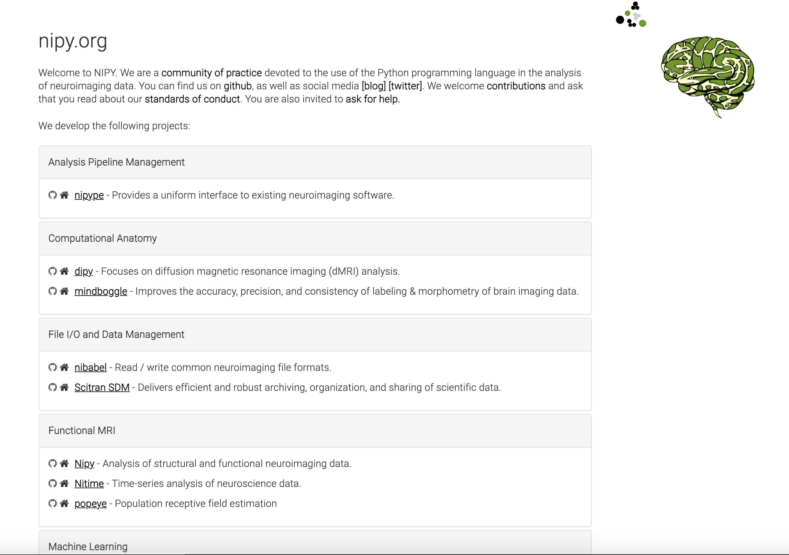
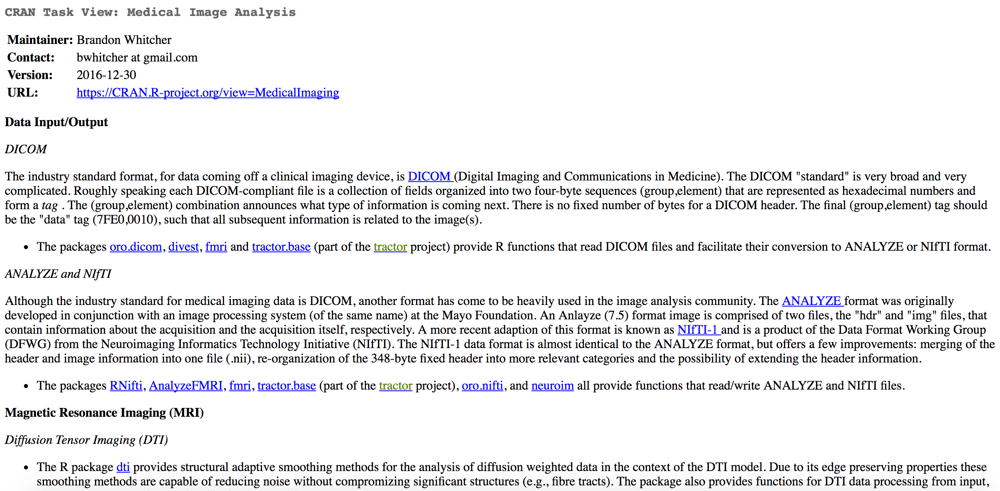
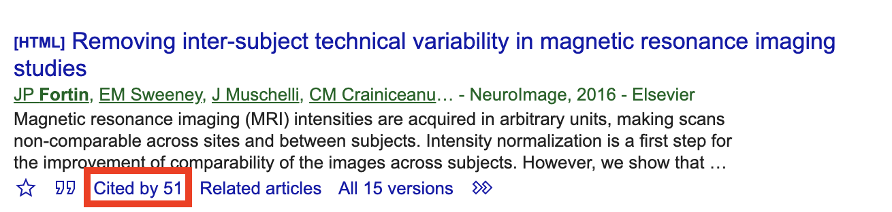
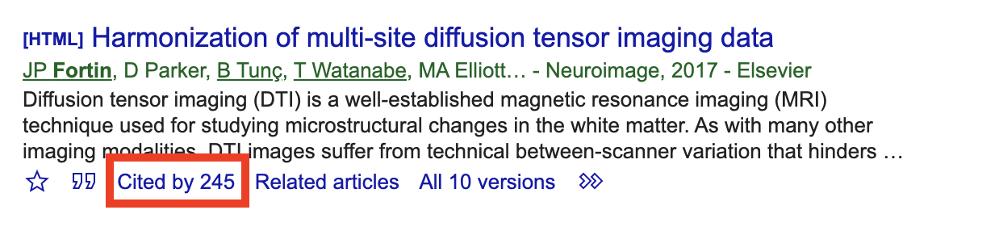
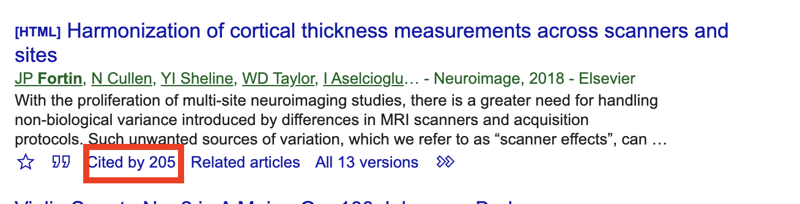
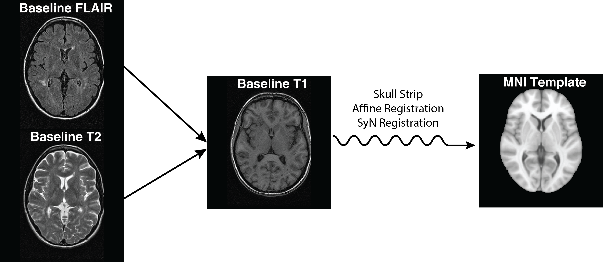
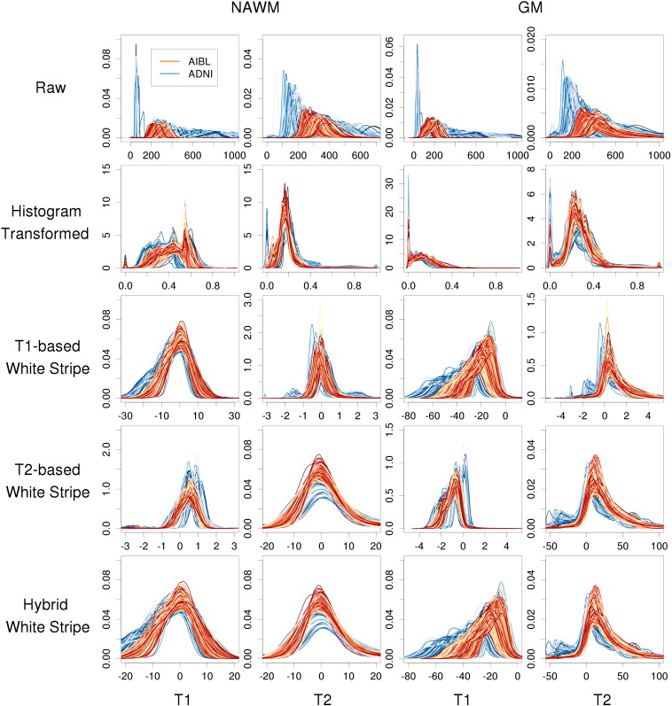
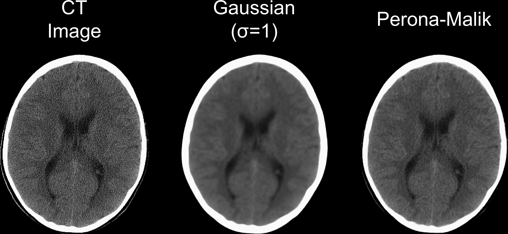
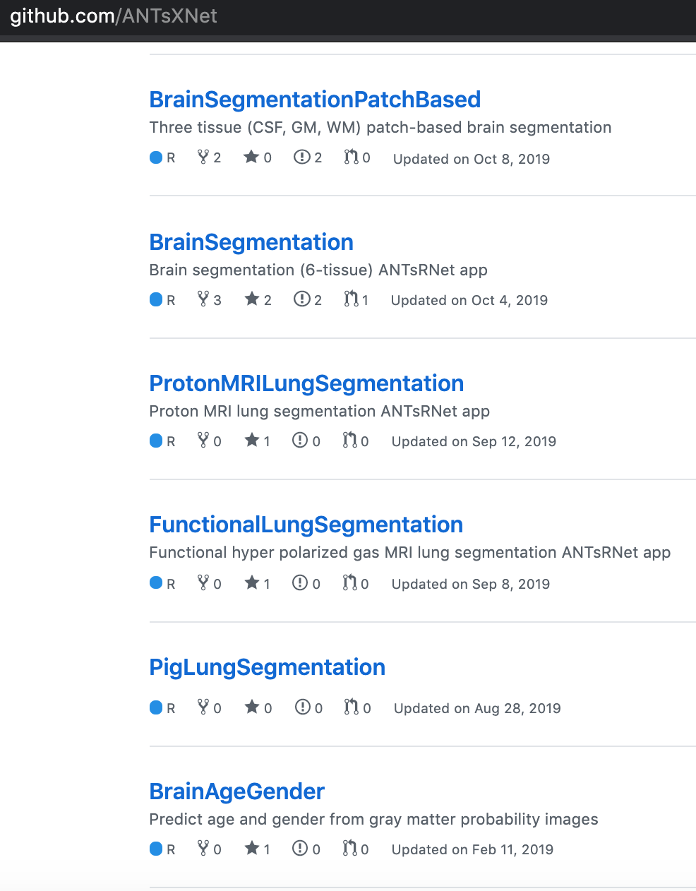

(Bio)Statisticians were LATE to the neuroimaging game
- Engineers got there first, a lot MRI started in engineering (also, there are more of them)
- MATLAB reigned supreme
- Cost, closed source had issues, also…the language (ever tried to read a CSV?)
- Python is stepping in: Nipy (also great logos)

Movie: Margin Call
There are three ways to make a living in this business: be first; be smarter; or cheat.
If you can’t be first, be different. Also … steal
R is a language and environment
for statistical computing
and graphics.
https://cran.r-project.org/
Should read “R started as …”
What does R have for medical imaging?

https://imgflip.com/memegenerator/Grandma-Finds-The-Internet
What does R have for medical imaging?

Envy: Bioconductor
- centralized bioinformatics packages (> 1300)
- large community/developer team
- published tutorials and workflows
- additional requirements to CRAN (e.g. packages need vignettes)
Why should you care?
- Students see resources - “I can learn genomics with Bioconductor easier than imaging”
- Researchers see analyses - “That’s the analysis I want to do, ready made”
- Papers with software get cited more
- Usually 1 paper for analysis/demonstration and 1 for software
- All of these lead to funding
There is Enough Space for Python and R, but we need our niche(s)
Where is the niche for R/(Bio)statisticians?
- Medical imaging, not just neuroimaging
- lungs, livers, oh my!
- Not just MRI: CT, PET, EEG, etc.
- Mixed effects and longitudinal modeling
Data Harmonization
- Steal (aka adapt) from genomics/BioC
- Label fusion statistical properties
- BAYES


An R Platform for
Medical Imaging Analysis
What is Neuroconductor?
- A centralized repository of packages (N = 115)
- A community of developers (N = 29) and users
- A website https://neuroconductor.org/.
- with tutorials and help
- A team helping developers and users
- Set of packages to allow R to perform processing.
Benefits of Neuroconductor
Allow imaging to use all R has to offer:
- Statistics and Machine Learning (
tensorflow) - Versioning and testing (
GitHub) - Reproducible reports and analyses
- Shiny (web applications)
- Genomics/Imaging analysis in one platform
- Bioconductor
Package Features: Image Registration
- ANTsR, RNiftyReg, fslr

Package Features: Inhomogeneity Correction
- ANTsR, fslr
Package Features: Intensity Normalization
- WhiteStripe - https://github.com/muschellij2/whitestripe
- RAVEL - https://github.com/Jfortin1/RAVEL
- ComBat - https://github.com/Jfortin1/ComBatHarmonization

Figure from Shinohara, Russell T., et al. “Statistical normalization techniques for magnetic resonance imaging.” NeuroImage: Clinical 6 (2014): 9-19.
Package Features: Smoothing
- fslr, ANTsR, AnalyzeFMRI

Package Features: Data
neurohcp - Human Connectome Project
kirby21.t1, kirby21.fmri - https://www.nitrc.org/projects/multimodal
nitrcbot - https://www.nitrc.org/
Rxnat - XNAT databases

Neuroconductor Goal:
Detailed tutorials on how to actually perform an analysis

{kind=link}
Training we are providing
Coursera Course: Introduction to Neurohacking In R
Things in the Works/Other work
https://github.com/ANTsXNet - Wide array of deep learning applications for R
https://github.com/msharrock/deepbleed - CNN for ICH Segmentation

Questions?
Submit Packages at: https://neuroconductor.org/submit-package
Funding: NIH 2R01NS060910 and U24HG010263